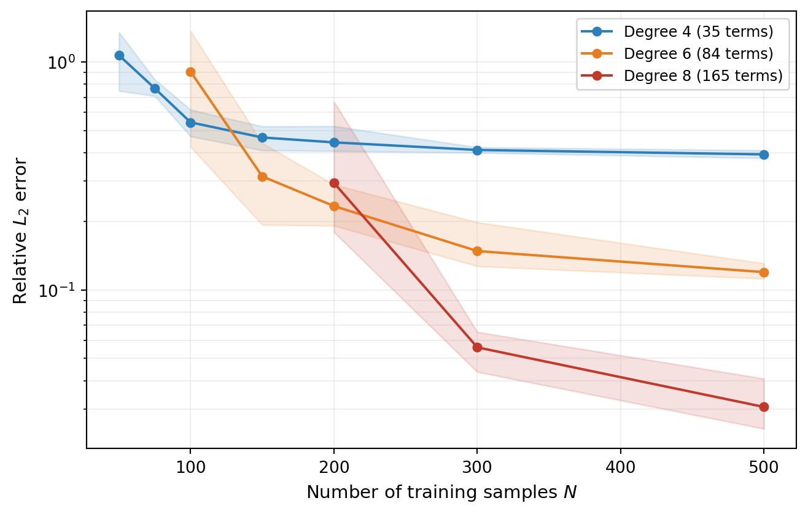
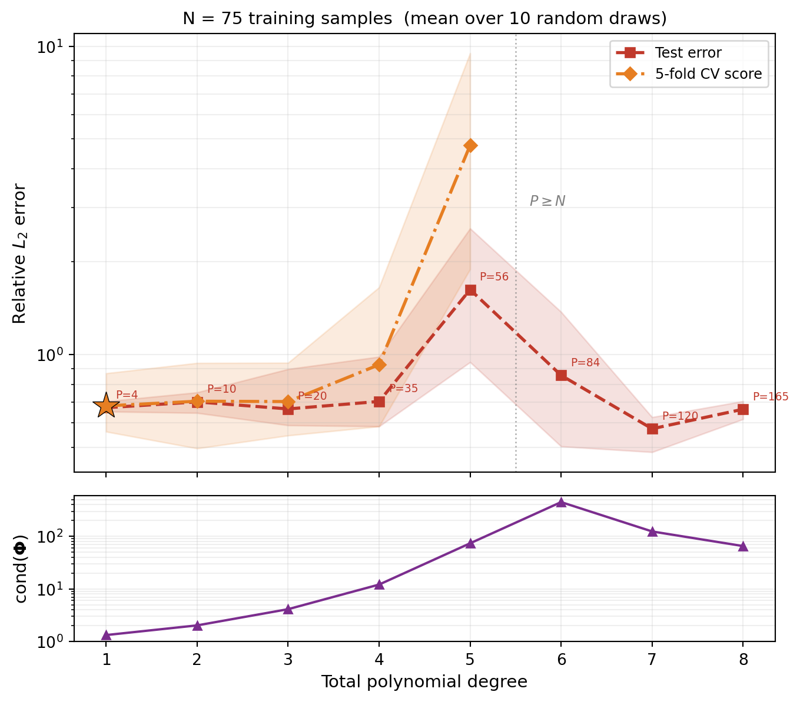
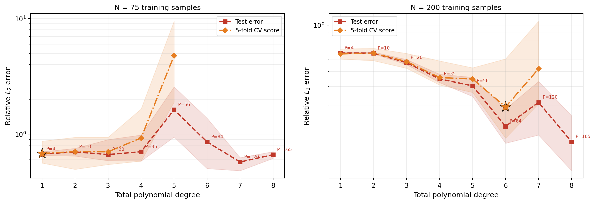

import numpy as np
import matplotlib.pyplot as plt
from pyapprox.util.backends.numpy import NumpyBkd
from pyapprox.benchmarks.instances.analytic.ishigami import ishigami_3d
from pyapprox.surrogates.affine.indices import (
compute_hyperbolic_indices,
)
from pyapprox.surrogates.affine.expansions.pce import (
create_pce_from_marginals,
)
from pyapprox.surrogates.affine.expansions.fitters.least_squares import (
LeastSquaresFitter,
)
from pyapprox.surrogates.affine.expansions.crossvalidation import (
leave_many_out_lsq_cross_validation,
get_random_k_fold_sample_indices,
)
bkd = NumpyBkd()
ls_fitter = LeastSquaresFitter(bkd)
benchmark = ishigami_3d(bkd)
model = benchmark.function()
prior = benchmark.prior()
marginals = prior.marginals()
nvars = model.nvars()
nqoi = model.nqoi()Overfitting and Cross-Validation
PyApprox Tutorial Library
Choose the polynomial degree using LOO cross-validation.
TipDownload Notebook
Learning Objectives
After completing this tutorial, you will be able to:
- Explain truncation error and recognize the degree-dependent accuracy floor
- Identify overfitting when too many polynomial terms are used with too few samples
- Use leave-one-out cross-validation to select the polynomial degree
- Interpret a train/test/CV error plot to diagnose surrogate quality
- Apply the
PCEDegreeSelectionFitterfor automated degree selection
Prerequisites
Complete Building a Polynomial Chaos Surrogate before this tutorial.
Setup
We use the Ishigami function, a standard UQ benchmark with \(d = 3\) uniform inputs on \([-\pi, \pi]\) and a single scalar output:
\[ f(x_1, x_2, x_3) = \sin(x_1) + 7\sin^2(x_2) + 0.1\, x_3^4 \sin(x_1). \]
The \(x_3^4 \sin(x_1)\) interaction term makes this function challenging for polynomial approximation — it requires high-degree cross-terms to resolve.
We generate a fixed test set for evaluating all surrogates built in this tutorial:
N_test = 2000
np.random.seed(123)
samples_test = prior.rvs(N_test)
values_test = model(samples_test)
vals_np = bkd.to_numpy(values_test)Truncation Error
Even with unlimited training data, a polynomial of fixed degree \(p\) cannot represent an arbitrary function exactly. The residual is called the truncation error:
\[ f(\boldsymbol{\theta}) = \underbrace{\sum_{j \in \Lambda_p} c_j\, \Psi_j(\boldsymbol{\theta})}_{\text{PCE approximation}} + \underbrace{\sum_{j \notin \Lambda_p} c_j\, \Psi_j(\boldsymbol{\theta})}_{\text{truncation error}} \]
A higher degree \(p\) includes more basis terms and reduces the truncation error, but increases the number of coefficients that must be estimated — requiring more training data to avoid overfitting.
Figure 1 demonstrates this trade-off. We fit PCEs at degrees 4, 6, and 8, each with increasing numbers of training samples, and plot the test-set \(L_2\) error. For each configuration, we repeat the experiment with different random training sets.

The key observation: each degree-\(p\) curve flattens at a floor that shrinks as \(p\) increases. Below the floor, adding more training data does not help — the limitation is the truncation error, not the fitting error. Above the floor (small \(N\)), the dominant error is from having too few samples to estimate the coefficients reliably.
But this raises a practical question: how do we choose the right degree? We need a method that works without a test set.
Train, Test, and CV Error vs. Degree
The key insight of cross-validation is that it can estimate the test error without a held-out test set. We sweep through total-degree index sets and evaluate three error measures for each degree.
We average each configuration over 10 random training sets. Figure 2 shows two error measures vs. polynomial degree for \(N = 75\):
- Test error (red): generalization error evaluated on a held-out test set (mean line with min/max envelope).
- CV score (orange): the 5-fold cross-validation estimate of generalization error (mean line with min/max envelope).
from pyapprox.tutorial_figures._pce import plot_train_test_cv
degrees_sweep = list(range(1, 9))
res = sweep_train_test_cv(
N_train=75, degrees=degrees_sweep,
samples_test=samples_test, values_test=values_test,
)
nterms_list = _nterms_list(degrees_sweep)
fig, (ax, ax_cond) = plt.subplots(
2, 1, figsize=(8, 7), sharex=True,
gridspec_kw={"height_ratios": [3, 1], "hspace": 0.08},
)
plot_train_test_cv(res, nterms_list, N_train=75, axes=[ax, ax_cond])
plt.tight_layout()
plt.show()
Two patterns are visible:
- Test error has a U-shape: it decreases as the degree reduces truncation error, then rises as the oversampling ratio \(N/P\) shrinks and the basis matrix becomes ill-conditioned. The ill-conditioned least-squares solution amplifies the truncation residual (the part of \(f\) that isn’t polynomial), fitting it as if it were signal. Crucially, this upturn happens while the system is still overdetermined (\(P < N\)).
- CV score tracks the test error and correctly identifies the optimal degree without needing a separate test set.
WarningWhen oversampling ratio drops below ~2
A useful rule of thumb: the oversampling ratio \(N/P\) (training samples per basis term) should be at least 2. Below this, the least-squares fit becomes unreliable and overfitting is likely. The condition number of the basis matrix grows rapidly as \(N/P \to 1\).
NoteCV scores can be unreliable at low oversampling ratios
In Figure 2 the CV score is only plotted where each \(k\)-fold training partition is still overdetermined. Even when CV can be computed, its accuracy degrades when the per-fold oversampling ratio is itself small, because the CV formula involves inverting an ill-conditioned sub-matrix. In practice, restrict CV candidate degrees to those with a comfortable oversampling ratio.
How the Optimal Degree Shifts with Data
With more training samples, we can afford higher-degree polynomials before the oversampling ratio becomes too small. Figure 3 shows the same sweep for \(N = 75\) and \(N = 200\):
from pyapprox.tutorial_figures._pce import plot_train_test_cv_2panel
res_75 = sweep_train_test_cv(
N_train=75, degrees=degrees_sweep,
samples_test=samples_test, values_test=values_test,
)
res_200 = sweep_train_test_cv(
N_train=200, degrees=degrees_sweep,
samples_test=samples_test, values_test=values_test,
)
nterms_list = _nterms_list(degrees_sweep)
fig, (ax1, ax2) = plt.subplots(1, 2, figsize=(13, 4.5))
plot_train_test_cv_2panel(res_75, res_200, nterms_list,
N_left=75, N_right=200, axes=[ax1, ax2])
plt.tight_layout()
plt.show()
The left panel (\(N = 75\)) shows the CV score bottoming out around degree 3–4 and then rising while the system is still overdetermined; the right panel (\(N = 200\)) can exploit higher degrees before overfitting begins, reaching a much lower error floor. This illustrates the fundamental interplay: more data enables more model complexity and a lower accuracy floor.
Automated Degree Selection with PCEDegreeSelectionFitter
Manually sweeping degrees is instructive but tedious. The PCEDegreeSelectionFitter automates this: it evaluates the CV score for each candidate level and returns the surrogate fitted at the best level.
The fitter takes an IndexSequenceProtocol object that maps an integer level to a multi-index set. Here we use HyperbolicIndexSequence with \(p\)-norm = 1 (total degree):
from pyapprox.surrogates.affine.expansions.fitters.pce_cv import (
PCEDegreeSelectionFitter,
)
from pyapprox.surrogates.affine.indices import (
HyperbolicIndexSequence,
)
N_train_cv = 200
np.random.seed(77)
samples_cv = prior.rvs(N_train_cv)
values_cv = model(samples_cv)
index_seq = HyperbolicIndexSequence(nvars, pnorm=1.0, bkd=bkd)
# With 5-fold CV each training fold has 0.8*N = 160 samples,
# so we restrict to levels where P < 160 (up to degree 7, P=120).
fitter = PCEDegreeSelectionFitter(
bkd,
levels=list(range(1, 8)),
index_sequence=index_seq,
alpha=0.0, # no ridge regularization
nfolds=5, # 5-fold cross-validation
)
max_level = 7
pce_base = create_pce_from_marginals(
marginals, max_level=max_level, bkd=bkd, nqoi=nqoi
)
cv_result = fitter.fit(pce_base, samples_cv, values_cv)
best_level = cv_result.best_label()We can verify that the selected degree matches the visual minimum and check the test-set error:
best_pce = cv_result.surrogate()
preds_cv = bkd.to_numpy(best_pce(samples_test))
l2_err = np.linalg.norm(vals_np[0, :] - preds_cv[0, :])
l2_ref = np.linalg.norm(vals_np[0, :])LOO vs. K-Fold CV
LOO cross-validation uses all but one sample for fitting, maximizing the effective training size, but requires the system to be overdetermined (N > P + 2). K-fold CV is more flexible — it can handle higher degrees — and is faster for large datasets. You can switch to LOO by setting nfolds=None:
fitter_loo = PCEDegreeSelectionFitter(
bkd,
levels=list(range(1, 8)),
index_sequence=index_seq,
nfolds=None, # LOO cross-validation
)
np.random.seed(77)
cv_result_loo = fitter_loo.fit(pce_base, samples_cv, values_cv)Key Takeaways
- Truncation error sets a floor on accuracy for any fixed polynomial degree — higher degrees reduce the floor but require more training data
- Overfitting occurs when the oversampling ratio \(N/P\) becomes small: the basis matrix becomes ill-conditioned and least squares amplifies the truncation residual. This happens before the system becomes underdetermined (\(P < N\))
- Cross-validation tracks the test error and provides a data-driven way to select the polynomial degree without a held-out test set
- The optimal degree depends on data budget: more training samples allow higher degrees before overfitting, reaching a lower error floor
PCEDegreeSelectionFitterautomates degree selection via LOO or K-fold CV, accepting anyIndexSequenceProtocolfor flexible index set strategies
Exercises
Run the truncation error experiment (Figure 1) with degree 10. How many training samples are needed before the error curve flattens?
In Figure 2, change the training set to \(N = 100\) samples. How does the CV-selected degree change? At what degree does the test error start rising?
Switch the
PCEDegreeSelectionFitterto LOO (nfolds=None). Does the selected degree change? Is the fit quality similar?
Next Steps
Continue with:
- Sparse Polynomial Approximation — OMP and BPDN/LASSO for high-dimensional polynomial chaos
- UQ with Polynomial Chaos — Using the fitted PCE to compute moments and marginal densities